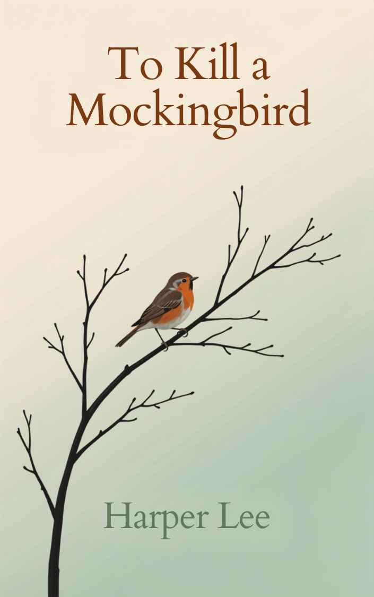

Book Details

To Kill a Mockingbird
Author: Harper Lee
Published: 1960 · Pages: 281 · ISBN: 978-0061120084
Available
Through young Scout Finch's eyes, a small Alabama town confronts prejudice and conscience when her father, lawyer Atticus Finch, defends an innocent man accused of a crime he did not commit.
Borrow This Book